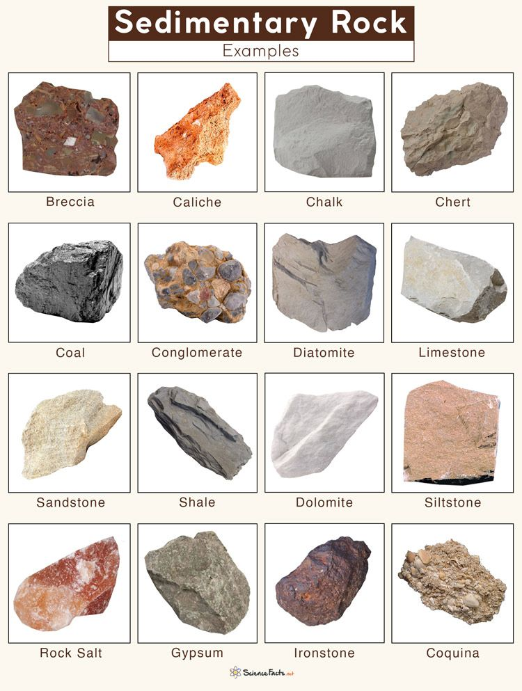

Sedimentary Rocks
About Sedimentary Rocks
WHEN THE ERODED PARTICLES ARE TRANSPORTED BY AGENTS SUCH AS AIR AND WATER INTO RIVERS, LAKES, AND OCEANS, THEY SETTLE AT THE BOTTOM.THE LOWER SEDIMENT IS PRESSED BY THE UPPER SEDIMENT AND THE WATER ABOVE IT.WHEN THE SEDIMENT REMAIN UNDER PRESSURE FOR THOUSANDS OF YEARS, IT BECOMES CEMENTED TOGETHER AND FORMS SEDIMENTARY ROCKS.
Sedimentary Rocks – Key Points
- Made from small pieces (sediments) of older rocks, sand, mud or shells.
- Formed in four main steps: Weathering → Erosion → Deposition → Compaction & Cementation.
- Most sedimentary rocks form in water (rivers, lakes, oceans).
- Very often show clear layers (called bedding or stratification).
- Very often contain fossils (remains of plants or animals).
- Common examples: sandstone, limestone, shale, conglomerate.
Examples: Sandstone, Limestone.